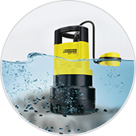
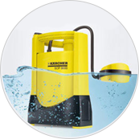
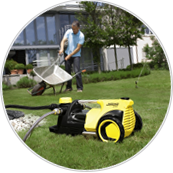
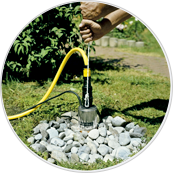

Самые популярные насосы Kärcher
для дома и дачи:
Погружные насосы
частицы до 30 мм
откачка грязной воды
частицы до 5 мм
откачка чистой воды
Оросительные насосы
скважинные
подача воды с глубины
садовые
полив газона, сада
Основные достоинства
Небольшое потребление электричества
Не требует частого ремонта
Поплавковый выключатель
для автоматического выключения
Необходимо только регулярно чистить
насос от скопившейся грязи
Дренажные насосы для грязной воды с частицами до 30 мм
Область применения:
Подвал
Погреб
Пруд
Бассейн
Строительный
Котлован
Адаптивный алгоритм позволяет насосу подстраиваться под постоян меняющийся объем воды и своевременно откачивать требуемое ее количество.
Откачанную воду можно использовать для полива сада и огорода.